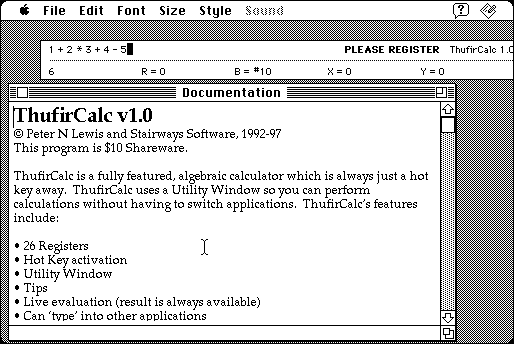

Download
thufircalc-10.zip (160K) ThufirCalc 1.0 repackaged into a zipped hfs disk image and checksum file. The disk image can be mounted with Mini vMac.
thufircalc-10.sit (160K) ThufirCalc 1.0 in the original format.
copyright: Peter N. Lewis
mod date: Jun 23, 1998
license: shareware
from url :
Stairways Files
Calculator with hot key activation. But it uses the 'control' key for activation, and a Macintosh Plus doesn't have a control key. (Mini vMac provides an emulated control key. The control key of the host computer is used to control the emulator, the emulated control key is toggled using Control-K.) Requires System 7.1 or later.

If you find these downloads useful, please consider helping the Gryphel Project, which hosts them.
Here are the md5 checksums for the downloads, signed with Gryphel Key 5:
--------- GRY SIGNED TEXT --------- 4d981cdaefe4bbd190592c3a1cb15efa thufircalc-10.zip bbd787ba6b07c4d669caabc0a6e6ac9e thufircalc-10.sit ------- BEGIN GRY SIGNATURE ------- Gry/4Xa8CFcUzxdN/NzzTyXbZ9Dr8myfQwZ5et2pR4qMxHgHqWRBJ7h8aisJc1J5 Bg7jxlWJt4JVIdCPmGyrnoJVII3VRhCmxdMbAjNXA2uvmOsv4UyYQLtlxMeQyCpe QXNMNuxzgddc9at53qUtUE6PiLBcR7xghFDbXRbHmG5UIIvZSji2SD2gyD+CZn5A -------- END GRY SIGNATURE --------